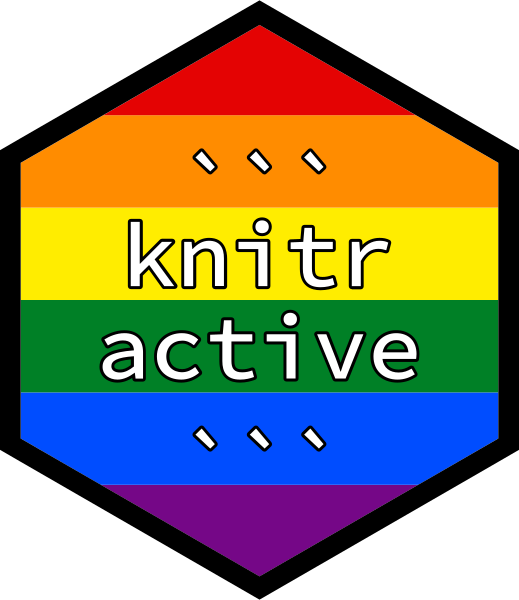

Using knitractive with Bash
Jeroen Janssens
2024-04-26
Source:vignettes/examples/bash.Rmd
bash.RmdView the corresponding bash.Rmd file to learn more about how this page was generated.
Take a screenshot of top
After two seconds we see the following screen:
top - 04:56:51 up 17:30, 0 users, load average: 0.94, 0.48, 0.34
Tasks: 2 total, 1 running, 1 sleeping, 0 stopped, 0 zombie
%Cpu(s): 0.0 us, 0.0 sy, 0.0 ni,100.0 id, 0.0 wa, 0.0 hi, 0.0 si, 0.0 st
MiB Mem : 9951.4 total, 1589.7 free, 1749.6 used, 6612.0 buff/cache
MiB Swap: 2048.0 total, 1920.6 free, 127.4 used. 7733.6 avail Mem
PID USER PR NI VIRT RES SHR S %CPU %MEM TIME+ COMMAND
1 root 20 0 3752 3040 2568 S 0.0 0.0 0:00.05 bash
3063 root 20 0 5740 2644 2256 R 0.0 0.0 0:00.01 top
Press q to exit top.
Send interrupt
We can simulate pressing CTRL-C to quit long-running processes:
View the corresponding bash.Rmd file to learn more about how this page was generated.